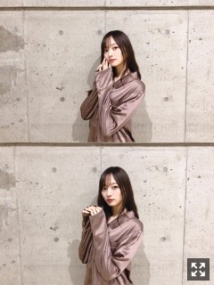

笑顔をあげられるなら
自撮りがいっつも同じ角度（笑）
寒くなってきて嬉しい梅澤です〜
コートゲットしました。
今年は黒ではありません。
梅澤なりの挑戦でもあります、、
今年の冬も乗り切るぞ〜
寒くなってきましたのでね、
皆様風邪にはお気をつけくださいませ。
さて、個別握手会にお越しくださった皆様
ありがとうございました！
上が大阪個握、
下が昨日の幕張個握にて頂いたものです❤︎
たくさんありがとうございます！
愛を受け取りました︎︎︎︎✌︎
メッセージもありがとうね
初めましての方が多くなったり、
とても有難く嬉しく思います。
女の子も凄く増えて嬉しい限りです(；；)
またコスメやらボディケアやら
楽しい時間を共有出来ていたら何よりです。
次の個別は名古屋ですね！
全国握手会もあるので楽しみです◎
乃木坂46の「の」、MCを卒業致しました！
約７ヶ月半の間担当させて頂きました。
あっという間だったなあ。
初めの頃は全然上手くいかず、
どこから手をつけていいかも分からず
収録の前日はお腹がキリキリするくらい
緊張していました。（笑）
失敗することも物凄く多かったけど
自分の番組だと思っていいから
と、ディレクターさんがかけてくださった言葉に救われました。
ラジオを、お喋りを勉強したかった私にとって
この場所はすごく有難い場所で、
ホームな暖かいこの空間で
なにより楽しくて仕方なかったです。
落ち込むことはあっても
気づけば私の大切な場所になっていました。
物凄く寂しいですが！
MCではなくゲストとしてまた遊びに行ける日まで！その日が待ち遠しいです。
ああ、本当に本当に寂しい。
未熟な私でしたが
約７ヶ月半の間、聴いてくださっていたリスナーの皆様、本当にありがとうございました！
次のMCは誰になるのでしょうか！わくわく
引き続き 毎週日曜 18:00〜
文化放送でお送りしている乃木坂46の「の」
お楽しみください！
また、ラジオがやりたいです☀︎
今回はわたくし梅澤が担当させて頂きました！
「ルームウェア」を作りました。
デザインはシンプルで素材は光沢があるような生地です！肌触りもよいです。
遠征して下さる方が多いのではと思い
そんな旅の中でもぜひ着てほしいなあと思いまして。
もちろん、普段のお家使いでも◎
今回、わがままを言って
カラー、ボタン、リボンを
男女でデザインを変えてもらいました！
叶えてくださったスタッフさんに
心から感謝しています(；；)
裾のラインやパンツのリボンのカラーは
レディースとメンズのカラーと
対称的にしています！
個人としてはもちろん、
カップルや兄妹、友達などと
お揃いにしても素敵だなあと思い
トータルでデザインを考えてみました。
あとは靴下と、
ルームスリッパも作りました！
レディースのカラー。

そしてこちらがメンズのカラー！
この色味がドンピシャすぎて
サンプル見て即決めでした（笑）
かなりお気に入りです。
私が着るとこんな感じですが、
男性が着るととてもかっこよいです！
襟のバラがポイントです〜
女の子がメンズのを大きめに着るのも可愛いし、
男性がレディースの方のカラーを着るのも可愛いです！◎
明日２６日 １２：００〜ネットにて販売になります！
↓↓↓
https://www.nogizaka46shop.com/lp/MinamiUmezawa_room-wear
完全受注販売になるので
皆様ぜひゲットしてみてください☀︎
ついに明日！本番となりました！
とても信じられないくらいに早い。
今回は先輩として
４期生を引っ張って行けるように、
そして何よりみんなで楽しめるように☀︎
多くは話しません！
とにかくお楽しみに！
髪型何にしましょかね。
タオルやサイリウムやうちわやボード、
ひとつ残らず見つけるつもりですので
ぜひ！アピールしてね︎︎︎︎✌︎
楽しみましょうね〜！！
それでは明日に備えて、
イメトレしながら眠りにつきます。
おやすみなさい
色んなことに夢中で気づけば時間がこんなに経っている、
味わって過ごさなきゃ︎︎︎︎✌︎大切に
笑顔の連鎖を作れるような人になれたら、素敵ですね◎
Original：https://www.nogizaka46.com/s/n46/diary/detail/53702?ima=4941&cd=MEMBER